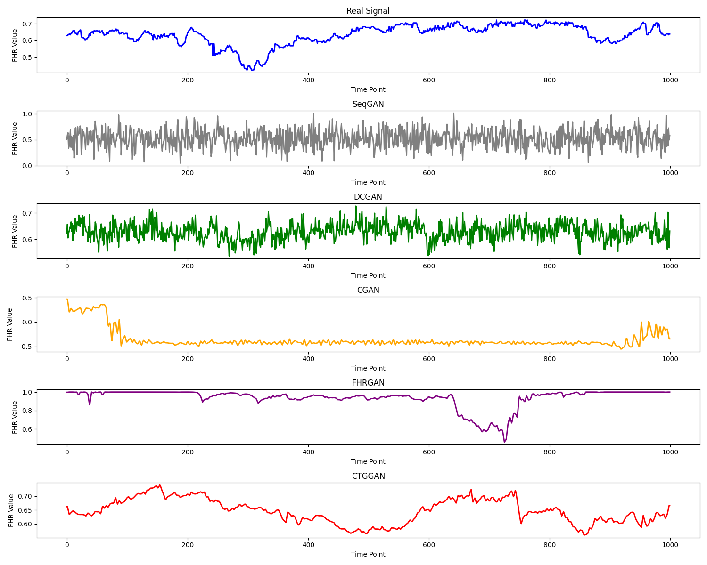
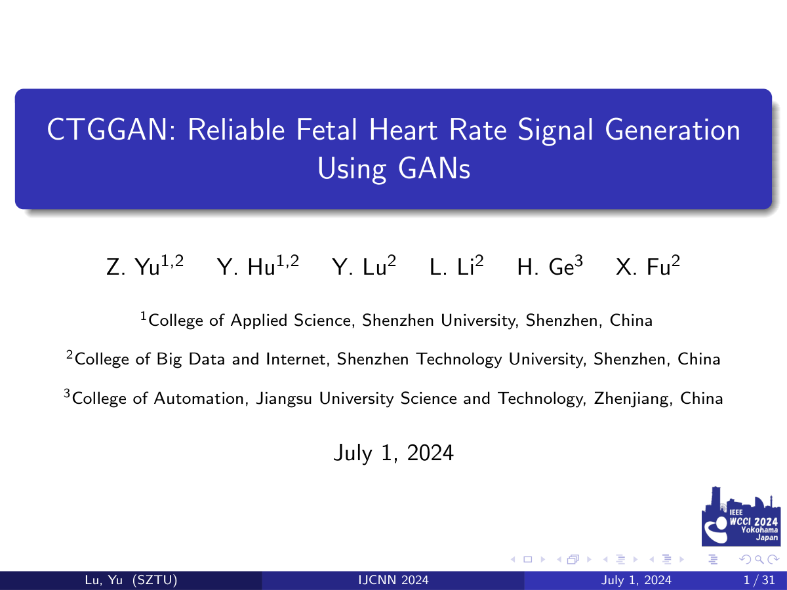

IJCNN 2024
CTGGANReliable Fetal Heart Rate Signal Generation Using GANs
1 College of Applied Science, Shenzhen University, Shenzhen, China
2 College of Big Data and Internet, Shenzhen Technology University, Shenzhen, China
3 College of Automation, Jiangsu University Science and Technology, Zhenjiang, China
* Corresponding author: lvyu@sztu.edu.cn
FHR synthesis guided by a category label.
Generate fetal heart rate signals from noise and a class label. Residual blocks, self-attention, and a Wasserstein objective with gradient penalty support the synthesis of temporal patterns.

- Output
- Fetal heart rate
- Condition
- Category label
- Generative model
- Conditional GAN
Overview
Learning FHR patterns when labeled recordings are limited.
CTGGAN studies synthetic fetal heart rate (FHR) generation as a response to data scarcity and class imbalance in automated fetal monitoring research. It combines category conditioning with residual learning and self-attention to model temporal patterns in one-dimensional signals.
The generated output is an FHR trace. Uterine contraction (UC) synthesis is outside this paper’s model scope.
Method
- 01
Condition on a class
A category label and a 100-dimensional noise vector enter the conditional generator, which outputs a 1,000-point FHR signal.
- 02
Model temporal structure
One-dimensional transposed convolutions, residual blocks, and self-attention capture local structure and relationships across the signal.
- 03
Train with Wasserstein loss
The discriminator and generator use a Wasserstein objective with gradient penalty to support stable adversarial training.
Dataset and training setting
The study uses the CTU-UHB database, which contains 552 recordings sampled at 4 Hz. The reported experiment selects 200 real FHR examples: 100 normal and 100 pathological. An 80/20 split provides 160 training examples and 40 test examples.
Preprocessing removes long missing segments and interpolates artifacts. Training uses 150 epochs, Adam with a learning rate of 10−4, batch size 32, and a gradient penalty coefficient of 10.
Results
CTGGAN has the lowest values among the models in the paper’s reported comparison. The two original tables are retained separately because they describe different metric groups.
| Model | RE ↓ | FD ↓ |
|---|---|---|
| SeqGAN | 10.324 | 0.974 |
| DCGAN | 9.532 | 0.795 |
| CGAN | 9.012 | 0.763 |
| FHRGAN | 7.059 | 0.682 |
| CTGGAN | 5.621 | 0.614 |
| Model | MMD ↓ | SWD ↓ | PRD ↓ |
|---|---|---|---|
| SeqGAN | 6.527 | 0.541 | 10.635 |
| DCGAN | 5.267 | 0.254 | 10.431 |
| CGAN | 5.022 | 0.254 | 9.431 |
| FHRGAN | 1.975 | 0.086 | 5.437 |
| CTGGAN | 0.215 | 0.012 | 4.821 |
RE: relative entropy; FD: Fréchet distance; MMD: maximum mean discrepancy; SWD: sliced Wasserstein distance; PRD: percent root mean square difference. Lower is better (↓); bold marks the lowest value in each column.


Scope and remaining questions
The results assess signal fidelity and distribution similarity in the reported data setting. The paper notes that some specific FHR characteristics remain difficult to reproduce and calls for evaluation with larger real-world datasets.
Presentation materials
Original presentation materials accompanying the paper.

Resources
Citation
Please cite the paper if you use this method or its results.
@inproceedings{yu2024ctggan,
title = {{CTGGAN}: Reliable Fetal Heart Rate Signal Generation Using GANs},
author = {Yu, Zichang and Hu, Yating and Lu, Yu and Li, Leya and Ge, Huilin and Fu, Xianghua},
booktitle = {2024 International Joint Conference on Neural Networks (IJCNN)},
year = {2024},
pages = {1--8},
publisher = {IEEE},
doi = {10.1109/IJCNN60899.2024.10650729},
url = {https://doi.org/10.1109/IJCNN60899.2024.10650729}
}Contact
For questions about this work, please contact Yu Lu at lvyu@sztu.edu.cn.